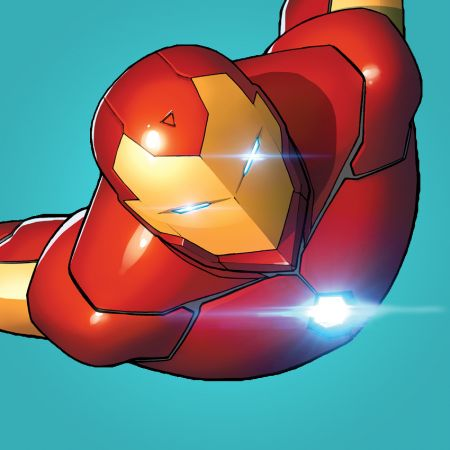

Iron Man est l'alter ego de Tony Stark (Anthony Edward Stark), un célèbre super-héros de l'univers Marvel créé par Stan Lee, Jack Kirby, Larry Lieber et Don Heck en mars 1963. En savoir plus.. Retour à l'accueil